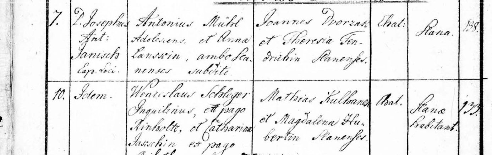
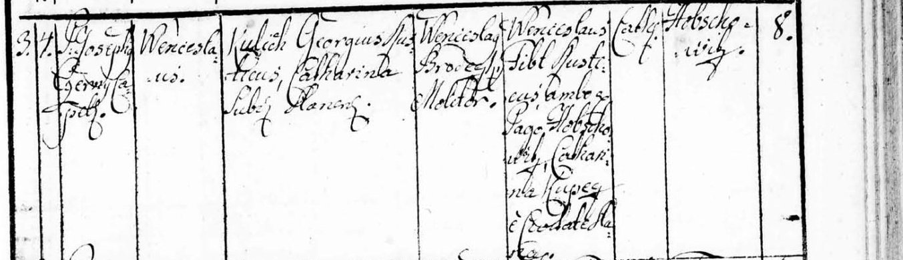
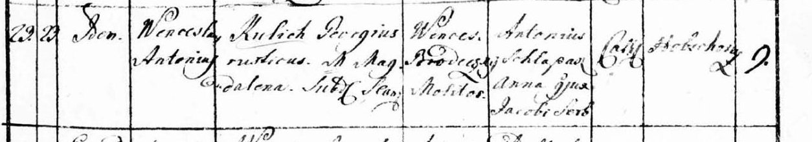
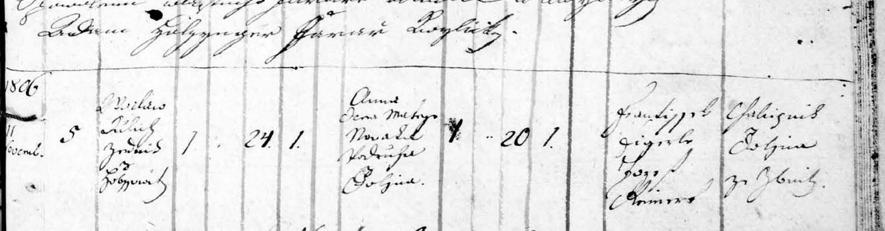
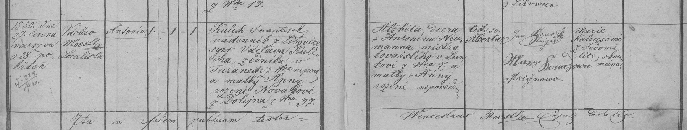
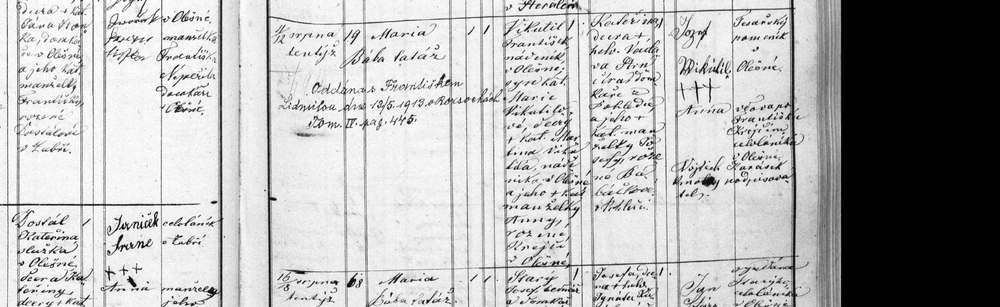
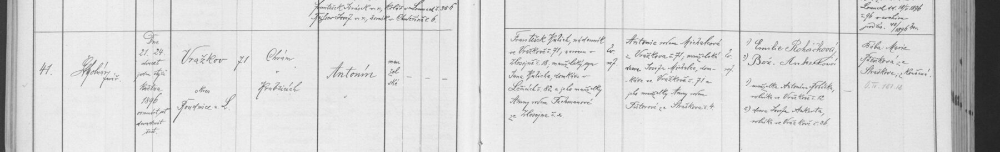
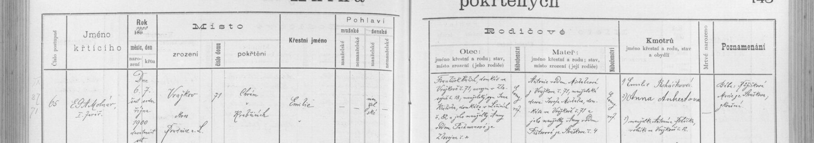
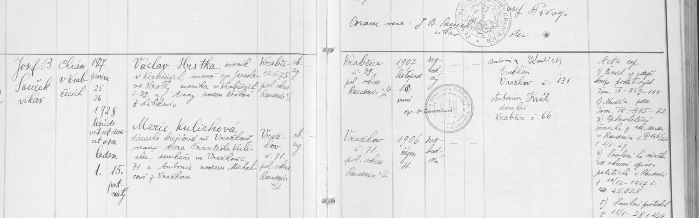

Zápisy z matrik
Všech 73 matričních zápisů a dalších pramenů přehledně podle data. Dostupné výřezy vidíte rovnou zde. Kliknutím na obrázek nebo název otevřete detail s dochovanými podklady a odkazem do archivu. Co zatím chybí nebo si odporuje, najdete v přehledu co ještě hledáme.
| Datum | Druh | Zápis | Týká se |
|---|---|---|---|
| 27. 5. 1752 | křest / narození | Křest Matěje Kulicha (Hobšovice) Slaný 06 – N, O, Z 1746–1770 (Slaný a okolí vč. Hobšovic)  Text z matriky a překladPřepis origináluFara Slaný (kostel sv. Gotharda), 27. 5. 1752 pokřtěn Matěj, syn Jiřího Kulicha, podruha (inquilinus) z Hobšovic, a manželky Magdaleny; poddaní panství slánského. Kmotr Matěj Liška (?), svědkové František Zalužský (?) a Anna Martinovská z Nabějic (?); křtil P. Jan Schultz. Index Slaný 33: „Kulich Matěj Jiří, Hobšovice 1752“. Náš Matěj, × 1773 Ouholice. PřekladFara Slaný (kostel sv. Gotharda), 27. 5. 1752 pokřtěn Matěj, syn Jiřího Kulicha, podruha (inquilinus) z Hobšovic, a manželky Magdaleny; poddaní panství slánského. Kmotr Matěj Liška (?), svědkové František Zalužský (?) a Anna Martinovská z Nabějic (?); křtil P. Jan Schultz. Index Slaný 33: „Kulich Matěj Jiří, Hobšovice 1752“. Náš Matěj, × 1773 Ouholice. | Matěj Kulich, Jiří Kulich, Magdalena |
| 4. 6. 1758 | křest / narození | Křest Antonína Víta Kulicha, Matějova bratra (Hobšovice) Slaný 06 – N, O, Z 1746–1770 (Slaný a okolí vč. Hobšovic)  Text z matriky a překladPřepis origináluFara Slaný, 4. 6. 1758: Antonín Vít, syn Jiřího Kulicha, sedláka (rusticus) z Hobšovic, a Magdaleny; poddaní panství slánského. Kmotr Antonín (?) z Hobšovic, svědkové Kateřina Lysková (?) a Barbora Hořejší (?). Mladší bratr našeho Matěje (* 1752) – stejní rodiče Jiří × Magdalena. PřekladFara Slaný, 4. 6. 1758: Antonín Vít, syn Jiřího Kulicha, sedláka (rusticus) z Hobšovic, a Magdaleny; poddaní panství slánského. Kmotr Antonín (?) z Hobšovic, svědkové Kateřina Lysková (?) a Barbora Hořejší (?). Mladší bratr našeho Matěje (* 1752) – stejní rodiče Jiří × Magdalena. | Matěj Kulich, Jiří Kulich |
| 11. 1. 1773 | sňatek | Sňatek Matěje Kulicha – zápis ve Slaném Slaný 18 – O 1771–1784, Z 1771–1784  Text z matriky a překladPřepis origináluFara Slaný (děkanský kostel sv. Gotharda), 11. 1. 1773, oddával P. Sebastian Koltrein, kaplan: Matěj, syn Jiřího Kulicha z Hobšovic, a Kateřina Jakoubková z Ouholic, poddaní panství nelahozeveského. Svědkové Alžběta Dvořáková a Matěj Hořejší ze Skur. Místo sňatku uvedeno „Auholitz“ – zápis ve Slaném je ohláška/opis k sňatku zapsanému i ve Vepřku 12. 1. 1773. PřekladFara Slaný (děkanský kostel sv. Gotharda), 11. 1. 1773, oddával P. Sebastian Koltrein, kaplan: Matěj, syn Jiřího Kulicha z Hobšovic, a Kateřina Jakoubková z Ouholic, poddaní panství nelahozeveského. Svědkové Alžběta Dvořáková a Matěj Hořejší ze Skur. Místo sňatku uvedeno „Auholitz“ – zápis ve Slaném je ohláška/opis k sňatku zapsanému i ve Vepřku 12. 1. 1773. | Matěj Kulich |
| 12. 1. 1773 | sňatek | Sňatek Matěje Kulicha a Kateřiny Jakoubkové (Ouholice) Vepřek 04 – N 1748–1792, O 1748–1777, Z 1748–1768 (celá fara, latinsky)  Text z matriky a překladPřepis origináluFara Vepřek, oddáni 12. 1. 1773 (latinsky), oddával P. František Blaha, farář, místo Ouholice: Matěj Kulich, poctivý (svobodný) ženich, syn Jiřího Kulicha, sedláka (rusticus) z Hobšovic čp. 8 × poctivá panna Kateřina, dcera Václava Jakoubka, chalupníka z Ouholic; oba poddaní panství „Jeniovessense“ (nejspíš Nelahozeves). Svědkové Josef Hartman z Brzkovic (?), Matěj Hořejší ze Skur (?) a Anna Krabcová z Ouholic. Matěj tedy přišel do Ouholic z Hobšovic u Slaného – ze stejné vsi jako Václav Kulich (* asi 1782), pradědeček legionáře Antonína Kulicha z Dolína. PřekladFara Vepřek, oddáni 12. 1. 1773 (latinsky), oddával P. František Blaha, farář, místo Ouholice: Matěj Kulich, poctivý (svobodný) ženich, syn Jiřího Kulicha, sedláka (rusticus) z Hobšovic čp. 8 × poctivá panna Kateřina, dcera Václava Jakoubka, chalupníka z Ouholic; oba poddaní panství „Jeniovessense“ (nejspíš Nelahozeves). Svědkové Josef Hartman z Brzkovic (?), Matěj Hořejší ze Skur (?) a Anna Krabcová z Ouholic. Matěj tedy přišel do Ouholic z Hobšovic u Slaného – ze stejné vsi jako Václav Kulich (* asi 1782), pradědeček legionáře Antonína Kulicha z Dolína. | Matěj Kulich, Kateřina Jakoubková, Jiří Kulich, Václav Jakoubek |
| 4. 1. 1775 | křest / narození | Křest Václava Kulicha (Hobšovice čp. 8, 1775) Slaný 07 – N 1771–1784  Text z matriky a překladPřepis origináluFara Slaný, narozen 3. 1., pokřtěn 4. 1. 1775 (latinsky), křtil kaplan P. Josef Černý: Václav, syn Jiřího Kulicha, sedláka, a Kateřiny, poddaní panství slánského; Hobšovice čp. 8. Kmotr Václav Brodecký, mlynář; svědkové Václav Šebl, sedlák z Hobšovic, a Kateřina Kupcová (?) ze Slaného. Dům čp. 8 je usedlost, kterou 1773 držel Jiří, otec našeho Matěje – v roce 1775 tu tedy hospodaří Jiří s manželkou Kateřinou (buď starý Jiří znovu ženatý, nebo jeho syn Jiří). Tento Václav zřejmě zemřel, protože 1783 se v Hobšovicích (čp. 9) narodil další Václav Antonín, syn Jiřího a Magdaleny. PřekladFara Slaný, narozen 3. 1., pokřtěn 4. 1. 1775 (latinsky), křtil kaplan P. Josef Černý: Václav, syn Jiřího Kulicha, sedláka, a Kateřiny, poddaní panství slánského; Hobšovice čp. 8. Kmotr Václav Brodecký, mlynář; svědkové Václav Šebl, sedlák z Hobšovic, a Kateřina Kupcová (?) ze Slaného. Dům čp. 8 je usedlost, kterou 1773 držel Jiří, otec našeho Matěje – v roce 1775 tu tedy hospodaří Jiří s manželkou Kateřinou (buď starý Jiří znovu ženatý, nebo jeho syn Jiří). Tento Václav zřejmě zemřel, protože 1783 se v Hobšovicích (čp. 9) narodil další Václav Antonín, syn Jiřího a Magdaleny. | |
| 4. 7. 1779 | sňatek | Sňatek Josefa Poláka a Anny Popelkové O Konice 1771–1785, kniha č. 9098 (Křemenec sn. 6), latinsky  Text z matriky a překladPřepis originálu4. 7. 1779 v Konici: mládenec Josef Polák, syn Josefa Poláka z Křemence, × panna Anna, dcera Pavla Popelky z Budětska; Křemenec čp. 7. Svědci Libor Popelka, rychtář (consul), a Josef Schnoll, podruh, oba z Křemence; oddával Karel Novák, kooperátor. Překlad4. 7. 1779 v Konici: mládenec Josef Polák, syn Josefa Poláka z Křemence, × panna Anna, dcera Pavla Popelky z Budětska; Křemenec čp. 7. Svědci Libor Popelka, rychtář (consul), a Josef Schnoll, podruh, oba z Křemence; oddával Karel Novák, kooperátor. | Josef Polák, Anna Popelková, Josef Polák, Pavel Popelka |
| 8. 7. 1781 | křest / narození | Křest Josefa Kulicha (Ouholice, 1781) Vepřek 04 – N 1748–1792, O 1748–1777, Z 1748–1768 (celá fara, latinsky)  Text z matriky a překladPřepis origináluFara Vepřek, 8. 7. 1781, křtil kaplan Vojtěch Svoboda: Josephus. Rodiče Matěj Kulich, chalupník z Ouholic, a Kateřina, poddaní panství …. Kmotr Josef Křížek (?), svědci Václav … a Anna Czerna z Ouholic. Starší Josef; protože v únoru 1783 dostal jméno Josef znovu jeden z dvojčat, tento Josef nejspíš zemřel jako dítě – úmrtí zatím neověřeno. PřekladFara Vepřek, 8. 7. 1781, křtil kaplan Vojtěch Svoboda: Josephus. Rodiče Matěj Kulich, chalupník z Ouholic, a Kateřina, poddaní panství …. Kmotr Josef Křížek (?), svědci Václav … a Anna Czerna z Ouholic. Starší Josef; protože v únoru 1783 dostal jméno Josef znovu jeden z dvojčat, tento Josef nejspíš zemřel jako dítě – úmrtí zatím neověřeno. | Matěj Kulich, Kateřina Jakoubková |
| 18. 2. 1783 | křest / narození | Křest dvojčat Josefa a Anny Kulichových (Ouholice) Vepřek 04 – N 1748–1792, O 1748–1777, Z 1748–1768 (celá fara, latinsky)  Text z matriky a překladPřepis origináluFara Vepřek, 18. 2. 1783 (latinsky), křtil P. František Blaha, farář: dvojčata Josephus a Anna. Rodiče Matěj Kulich, chalupník (casarius) z Ouholic, a manželka Kateřina, poddaní panství „Jeniovessense“ (nejspíš Nelahozeves). Kmotři Josef Křížek, chalupník, a Dorota Danzová (?) z Dušník, svědkové Jiří Plička, chalupník z Vepřku, a Anna Černá, chalupnice z Ouholic. Pravděpodobně křest našeho Josefa Kulicha (při sňatku 1833 uvedeno 48 let, to odpovídá spíš roku 1784–85; starší bratr Josef * 1781 asi zemřel, protože jméno bylo dáno znovu). PřekladFara Vepřek, 18. 2. 1783 (latinsky), křtil P. František Blaha, farář: dvojčata Josephus a Anna. Rodiče Matěj Kulich, chalupník (casarius) z Ouholic, a manželka Kateřina, poddaní panství „Jeniovessense“ (nejspíš Nelahozeves). Kmotři Josef Křížek, chalupník, a Dorota Danzová (?) z Dušník, svědkové Jiří Plička, chalupník z Vepřku, a Anna Černá, chalupnice z Ouholic. Pravděpodobně křest našeho Josefa Kulicha (při sňatku 1833 uvedeno 48 let, to odpovídá spíš roku 1784–85; starší bratr Josef * 1781 asi zemřel, protože jméno bylo dáno znovu). | Josef Kulich, Matěj Kulich, Kateřina Jakoubková |
| 23. 8. 1783 | křest / narození | Křest Václava Antonína Kulicha (Hobšovice) Slaný 07 – N 1771–1784  Text z matriky a překladPřepis origináluFara Slaný, 23. 8. 1783 (latinsky): Václav Antonín, syn Jiřího Kulicha, sedláka (rusticus) z Hobšovic čp. 9, a Magdaleny; poddaní panství slánského. Kmotr Václav Brodecký (?), mlynář; svědci Antonín Schlapa a Anna, žena Jakuba Serba (?). Pravděpodobně Václav Kulich, zedník z Hobšovic, × 1806 Želevčice (24 let) – pradědeček legionáře Antonína Kulicha. Otec Jiří s manželkou Magdalenou: buď tentýž Jiří jako otec Matěje (* 1752; děti by pak byly ve věku 31 let od sebe – nepravděpodobné), nebo spíš mladší Jiří, Matějův bratr (index uvádí v Hobšovicích „Kulich Jiří 1759“ a další Kulichy 1757–1779). PřekladFara Slaný, 23. 8. 1783 (latinsky): Václav Antonín, syn Jiřího Kulicha, sedláka (rusticus) z Hobšovic čp. 9, a Magdaleny; poddaní panství slánského. Kmotr Václav Brodecký (?), mlynář; svědci Antonín Schlapa a Anna, žena Jakuba Serba (?). Pravděpodobně Václav Kulich, zedník z Hobšovic, × 1806 Želevčice (24 let) – pradědeček legionáře Antonína Kulicha. Otec Jiří s manželkou Magdalenou: buď tentýž Jiří jako otec Matěje (* 1752; děti by pak byly ve věku 31 let od sebe – nepravděpodobné), nebo spíš mladší Jiří, Matějův bratr (index uvádí v Hobšovicích „Kulich Jiří 1759“ a další Kulichy 1757–1779). | |
| 20. 4. 1786 | křest / narození | Křest Jiřího Poláka N Konice 1786–1804, kniha č. 9071 (Křemenec od sn. 38)  Text z matriky a překladPřepis origináluJiří (Georg), pokřtěn 20. 4. 1786 v Konici, Křemenec čp. 7 – první zápis nové knihy „Geburtsbuch von dem Dorf Křemenetz“; otec Josef Polák, sedlák (Bauer), matka Anna Poláková. Kmotři František Krüber, kožešník z Konice, a Magdalena, jeho dcera; křtil Karel Novák, kooperátor. PřekladJiří (Georg), pokřtěn 20. 4. 1786 v Konici, Křemenec čp. 7 – první zápis nové knihy „Geburtsbuch von dem Dorf Křemenetz“; otec Josef Polák, sedlák (Bauer), matka Anna Poláková. Kmotři František Krüber, kožešník z Konice, a Magdalena, jeho dcera; křtil Karel Novák, kooperátor. | Jiří Polák, Josef Polák, Anna Popelková |
| 11. 11. 1806 | sňatek | Sňatek Václava Kulicha a Anny Novákové (Želevčice) Zlonice 20 – N, O Želevčice 1785–1863  Text z matriky a překladPřepis origináluŽelevčice čp. 5 (fara Zlonice), oddáni 11. 11. 1806: Václav Kulich, zedník z Hobšovic (?), katolík, 24 let, svobodný × Anna, dcera Matěje Nováka, podruha (?) z Dolína, 20 let, svobodná. Svědkové František … a … z Dolína / ze Zlonic; oddával kaplan P. Josef …. Rodiče ženicha zápis neuvádí. Václav (* asi 1782) je pradědeček legionáře Antonína Kulicha (* 1888). Vazba na Kulichy z Ouholic (Matěj, Josef * asi 1785) zatím nedoložena – Václav přichází z jiné vsi. PřekladŽelevčice čp. 5 (fara Zlonice), oddáni 11. 11. 1806: Václav Kulich, zedník z Hobšovic (?), katolík, 24 let, svobodný × Anna, dcera Matěje Nováka, podruha (?) z Dolína, 20 let, svobodná. Svědkové František … a … z Dolína / ze Zlonic; oddával kaplan P. Josef …. Rodiče ženicha zápis neuvádí. Václav (* asi 1782) je pradědeček legionáře Antonína Kulicha (* 1888). Vazba na Kulichy z Ouholic (Matěj, Josef * asi 1785) zatím nedoložena – Václav přichází z jiné vsi. | |
| 28. 1. 1812 | sňatek | Sňatek Jiřího Poláka a Marianny Paulíkové O Konice 1804–1817, kniha č. 9100 (Křemenec sn. 44–47)  Text z matriky a překladPřepis origináluJiří (26 l.), syn zemřelého Josefa Poláka, sedláka z Křemence, Křemenec čp. 7 × Marianna (22 l.), dcera Václava Paulíka, sedláka z Čunína čp. 9. Svědci Jiří Koplar (?), sedlák, a Tomáš …, čtvrtláník, oba z Křemence; oddával Josef Schubert, kaplan. PřekladJiří (26 l.), syn zemřelého Josefa Poláka, sedláka z Křemence, Křemenec čp. 7 × Marianna (22 l.), dcera Václava Paulíka, sedláka z Čunína čp. 9. Svědci Jiří Koplar (?), sedlák, a Tomáš …, čtvrtláník, oba z Křemence; oddával Josef Schubert, kaplan. | Jiří Polák, Marianna Paulíková, Josef Polák, Václav Paulík |
| 25. 10. 1816 | křest / narození | Křest Martina Poláka N Konice 1804–1817, kniha č. 9072 (oddíly po obcích)  Text z matriky a překladPřepis origináluMartin, nar. a pokřtěn 25. 10. 1816 v Křemenci čp. 7; otec Jiří Polák, sedlák; matka Marianna, dcera Václava Paulíka, sedláka z Čunína. Kmotři Anton Kubín (?), písař z Runářova, a Eleonora jeho manželka; křtil Martin Pospíšil, kaplan. PřekladMartin, nar. a pokřtěn 25. 10. 1816 v Křemenci čp. 7; otec Jiří Polák, sedlák; matka Marianna, dcera Václava Paulíka, sedláka z Čunína. Kmotři Anton Kubín (?), písař z Runářova, a Eleonora jeho manželka; křtil Martin Pospíšil, kaplan. | Martin Polák, Jiří Polák, Marianna Paulíková, Václav Paulík |
| 15. 1. 1833 | sňatek | Sňatek Josefa Kulicha a Rozálie ovdovělé Jindřichové Vepřek 15 – N, O, Z Nová Ves 1825–1854  Text z matriky a překladPřepis origináluNová Ves (fara Vepřek), oddáni 15. 1. 1833. Ženich Josef Kulich, domkář z Ouholic (?), 48 let, vdovec po † Kateřině …ové (příjmení nejisté), syn Matěje Kulicha, chalupníka z Ouholic čp. 20, a Kateřiny roz. Jakoubkové z Ouholic; poddaný panství roudnického. Nevěsta Rozálie, vdova po † Janu Jindřichovi, domkáři z Nové Vsi čp. 32, dcera † Tomáše Jatla (?), domkáře z Nové Vsi čp. 6 (?), a Alžběty roz. Hůtové (?); 34 let (?), vdova; poddaná panství roudnického. Svědkové Jan …, Janda (?) z Vepřku a Josef Zlonický (?), mistr truhlářský z Ouholic. Ohlášky prominuty na základě povolení vikariátu v Roudnici z 19. 12. 1832 č. 1781. Řeší rozpor v rodném jménu: Rozálie se narodila jako Jatlová (?), „Jindřichová“ bylo jméno po prvním muži. Do domu čp. 32 se Josef přiženil. PřekladNová Ves (fara Vepřek), oddáni 15. 1. 1833. Ženich Josef Kulich, domkář z Ouholic (?), 48 let, vdovec po † Kateřině …ové (příjmení nejisté), syn Matěje Kulicha, chalupníka z Ouholic čp. 20, a Kateřiny roz. Jakoubkové z Ouholic; poddaný panství roudnického. Nevěsta Rozálie, vdova po † Janu Jindřichovi, domkáři z Nové Vsi čp. 32, dcera † Tomáše Jatla (?), domkáře z Nové Vsi čp. 6 (?), a Alžběty roz. Hůtové (?); 34 let (?), vdova; poddaná panství roudnického. Svědkové Jan …, Janda (?) z Vepřku a Josef Zlonický (?), mistr truhlářský z Ouholic. Ohlášky prominuty na základě povolení vikariátu v Roudnici z 19. 12. 1832 č. 1781. Řeší rozpor v rodném jménu: Rozálie se narodila jako Jatlová (?), „Jindřichová“ bylo jméno po prvním muži. Do domu čp. 32 se Josef přiženil. | Jan Kulich, Josef Kulich, Rozálie Jatlová (?), Matěj Kulich, Kateřina Jakoubková |
| 18. 10. 1837 | sňatek | Sňatek Martina Poláka a Marianny Tilšerové O Konice 1817–1838, kniha č. 9101 (oddíly po obcích)  Text z matriky a překladPřepis origináluMartin Polák (21 l.), syn zemřelého Jiřího Poláka, pololáníka v Křemenci, a Marianny roz. Paulíkové, Křemenec čp. 7 × Marianna (25 l.), dcera Jiřího Tilšera, familianta ve Veselé, a Barbory roz. Hirthové (?), Veselá čp. 10. Svědci Josef Polák, sedlák v Křemenci, a Josef Tilšer, familiant ve Veselé. Ženich nezletilý – svolení vrchního poručenského úřadu z 22. 9. 1837. PřekladMartin Polák (21 l.), syn zemřelého Jiřího Poláka, pololáníka v Křemenci, a Marianny roz. Paulíkové, Křemenec čp. 7 × Marianna (25 l.), dcera Jiřího Tilšera, familianta ve Veselé, a Barbory roz. Hirthové (?), Veselá čp. 10. Svědci Josef Polák, sedlák v Křemenci, a Josef Tilšer, familiant ve Veselé. Ženich nezletilý – svolení vrchního poručenského úřadu z 22. 9. 1837. | Martin Polák, Marianna Tilšerová, Jiří Polák, Marianna Paulíková, Jiří Tilšer, Barbora Hirthová (?) |
| 10. 8. 1838 | křest / narození | Křest Jana Poláka N Konice 1834–1846, kniha č. 9075 (oddíly po obcích)  Text z matriky a překladPřepis origináluJohann Lorenz (Jan Vavřinec), nar. 10. 8. 1838 v Křemenci čp. 32, pokřtěn 11. 8.; otec Martin Polák, zahradník tamtéž; matka Marianna, dcera Jiřího Tilšera, familianta ve Veselé (Fröhlichsdorf). Kmotři Josef Tilšer, familiant ve Veselé, a Eleonora jeho manželka. Přípisek: † 9. 3. 1915. PřekladJohann Lorenz (Jan Vavřinec), nar. 10. 8. 1838 v Křemenci čp. 32, pokřtěn 11. 8.; otec Martin Polák, zahradník tamtéž; matka Marianna, dcera Jiřího Tilšera, familianta ve Veselé (Fröhlichsdorf). Kmotři Josef Tilšer, familiant ve Veselé, a Eleonora jeho manželka. Přípisek: † 9. 3. 1915. | Jan Polák, Martin Polák, Marianna Tilšerová, Jiří Tilšer |
| 6. 11. 1839 | křest / narození | Křest Jana Nepomuka Kulicha (děd pradědy Václava) Vepřek 15 – N, O, Z Nová Ves 1825–1854  Text z matriky a překladPřepis origináluNová Ves (fara Vepřek), narozen a pokřtěn 6. 11. 1839, Jan Nepomuk, katolík, manželský; křtil Antonín Štěpnička (?), kaplan. Otec Josef Kulich, domkář z Nové Vsi, syn † Matěje Kulicha, chalupníka z Ouholic čp. 20, a † Kateřiny rozené Jakoubkové (?) z Ouholic. Matka Rozálie, dcera † Tomáše Jakla / Jatla (?), podruha z Nové Vsi, a † Alžběty rozené Hůtové (?). Porodní bába Anna Kropáčová (?) z Nové Vsi. Dům čp. 32 (stejné číslo jako při úmrtí Rozálie 1877). Kmotr Jan Jindřich (Johann Gindřich) z Nové Vsi – odtud nejspíš pochází „Jindřichová“ v ledčických zápisech. Rodné příjmení matky se liší od křtů vnoučat v Ledčicích (1870–1883: Rozálie roz. Jindřichová) – nutno ověřit (sňatek Josefa a Rozálie). PřekladNová Ves (fara Vepřek), narozen a pokřtěn 6. 11. 1839, Jan Nepomuk, katolík, manželský; křtil Antonín Štěpnička (?), kaplan. Otec Josef Kulich, domkář z Nové Vsi, syn † Matěje Kulicha, chalupníka z Ouholic čp. 20, a † Kateřiny rozené Jakoubkové (?) z Ouholic. Matka Rozálie, dcera † Tomáše Jakla / Jatla (?), podruha z Nové Vsi, a † Alžběty rozené Hůtové (?). Porodní bába Anna Kropáčová (?) z Nové Vsi. Dům čp. 32 (stejné číslo jako při úmrtí Rozálie 1877). Kmotr Jan Jindřich (Johann Gindřich) z Nové Vsi – odtud nejspíš pochází „Jindřichová“ v ledčických zápisech. Rodné příjmení matky se liší od křtů vnoučat v Ledčicích (1870–1883: Rozálie roz. Jindřichová) – nutno ověřit (sňatek Josefa a Rozálie). | Jan Kulich, Josef Kulich, Rozálie Jatlová (?), Matěj Kulich, Kateřina Jakoubková |
| 27. 6. 1850 | křest / narození | Křest Antonína Kulicha, otce legionáře (Libovice) Tuřany 04 – N 1844–1860 (Libovice, Tuřany, Studeněves…)  Text z matriky a překladPřepis origináluLibovice (fara Tuřany), narozen 27. 6. 1850, pokřtěn 28. 6. lokalistou Václavem Moestlem: Antonín, katolík, manželský. Otec František Kulich, nádeník v Libovicích, syn † Václava Kulicha, zedníka v Tuřanech, a Anny roz. Novákové z Dolína čp. 37. Matka Alžběta, dcera † Antonína Neumanna, mistra kovářského v Luníkově čp. 7, a † Anny. Bydliště uvedeno „Cech sv. Alberta“ (?). Porodní bába Marie Kalousová z Jedomělic. Index fary (Tuřany 16) uvádí v Libovicích ještě Alžbětu Kulichovou (asi 1847–1849, s. 21) a Vojtěcha Kulicha (1852, s. 44). Otec legionáře Antonína (* 1888 Dolín). PřekladLibovice (fara Tuřany), narozen 27. 6. 1850, pokřtěn 28. 6. lokalistou Václavem Moestlem: Antonín, katolík, manželský. Otec František Kulich, nádeník v Libovicích, syn † Václava Kulicha, zedníka v Tuřanech, a Anny roz. Novákové z Dolína čp. 37. Matka Alžběta, dcera † Antonína Neumanna, mistra kovářského v Luníkově čp. 7, a † Anny. Bydliště uvedeno „Cech sv. Alberta“ (?). Porodní bába Marie Kalousová z Jedomělic. Index fary (Tuřany 16) uvádí v Libovicích ještě Alžbětu Kulichovou (asi 1847–1849, s. 21) a Vojtěcha Kulicha (1852, s. 44). Otec legionáře Antonína (* 1888 Dolín). | |
| 18. 10. 1860 | křest / narození | Křest Františka Poláka (nejstarší bratr Jana) N Konice 1856–1866, kniha č. 9077 (sv. XIII), oddíly po obcích  Text z matriky a překladPřepis origináluFranz, nar. 18. 10. 1860 v Čuníně čp. 64, pokřtěn 20. 10.; nemanželský syn Anny Pospíšilové. Přípisek: legitimován sňatkem rodičů 18. 11. 1862, otec Jan Polák se k němu přihlásil podpisem. PřekladFranz, nar. 18. 10. 1860 v Čuníně čp. 64, pokřtěn 20. 10.; nemanželský syn Anny Pospíšilové. Přípisek: legitimován sňatkem rodičů 18. 11. 1862, otec Jan Polák se k němu přihlásil podpisem. | Jan Polák, Jan Polák, Anna Pospíšilová |
| 18. 11. 1862 | sňatek | Sňatek Jana Poláka a Anny Pospíšilové O Konice 1856–1872, kniha č. 9103, oddíly po obcích (Čunín pag. 84–107)  Text z matriky a překladPřepis origináluJan Polák (24 l.), podruh v Křemenci (č. d. 64/21), syn Martina Poláka, výměnkáře v Křemenci, a Marianny roz. Tilšerové (?) z Veselé (Fröhlichsdorf); nevěsta Anna (27 l.), dcera Jiřího Pospíšila, domkáře, a Anny roz. Švedové (?). PřekladJan Polák (24 l.), podruh v Křemenci (č. d. 64/21), syn Martina Poláka, výměnkáře v Křemenci, a Marianny roz. Tilšerové (?) z Veselé (Fröhlichsdorf); nevěsta Anna (27 l.), dcera Jiřího Pospíšila, domkáře, a Anny roz. Švedové (?). | Jan Polák, Anna Pospíšilová, Martin Polák, Marianna Tilšerová, Jiří Pospíšil, Anna Švédová, Jiří Tilšer, Josef Švéda |
| 6. 6. 1865 | křest / narození | Křest Jana Poláka N Konice 1856–1866, kniha č. 9077 (sv. XIII), oddíly po obcích  Text z matriky a překladPřepis origináluJan (Joannes), Čunín čp. 64, syn Jana Poláka, podruha v Čuníně (syna Martina Poláka, zahradníka v Křemenci, a Marianny roz. Tilšerové (?) z Veselé), a Anny, dcery Jiřího Pospíšila, domkáře v Čuníně, a Anny roz. Švedové (?). Přípisek: † 11. 2. 1943 v Kostelci. PřekladJan (Joannes), Čunín čp. 64, syn Jana Poláka, podruha v Čuníně (syna Martina Poláka, zahradníka v Křemenci, a Marianny roz. Tilšerové (?) z Veselé), a Anny, dcery Jiřího Pospíšila, domkáře v Čuníně, a Anny roz. Švedové (?). Přípisek: † 11. 2. 1943 v Kostelci. | Jan Polák, Jan Polák, Anna Pospíšilová, Martin Polák, Marianna Tilšerová, Jiří Pospíšil, Anna Švédová |
| 16. 11. 1868 | křest / narození | Křest Eduarda Poláka (bratr Jana) N Konice 1867–1873, kniha č. 9079 (Čunín sn. 88–129)  Text z matriky a překladPřepis origináluEduard, nar. 16. 11. 1868 v Čuníně čp. 64, pokřtěn 17. 11. Přípisek: † 25. 7. 1923. PřekladEduard, nar. 16. 11. 1868 v Čuníně čp. 64, pokřtěn 17. 11. Přípisek: † 25. 7. 1923. | Jan Polák, Jan Polák, Anna Pospíšilová |
| 1870 (datace podle MyHeritage) | křest / narození | Marie Vykutilová – rodiče v dochovaném výřezu N Olešná 1860–1909, kniha 15997  Text z matriky a překladPřepis origináluDochovaný výřez zápisu Marie: otec František Vykutil, nádeník v Olešné, syn Marie Vykutilové, dcery Martina Vykutila a Anny roz. Krejčí. Matka Kateřina, dcera Václava Hrnčíře z Pohledce – nikoli Kroutilová, k níž je Marie připojena v exportu. Rok 1870 a odkaz na snímek 30 jsou převzaty z MyHeritage; hlavička s rokem ve výřezu chybí. Totožnost otce s otcem naší Josefy (*1880) dosud není potvrzena. Výřez není plný archivní snímek. PřekladDochovaný výřez zápisu Marie: otec František Vykutil, nádeník v Olešné, syn Marie Vykutilové, dcery Martina Vykutila a Anny roz. Krejčí. Matka Kateřina, dcera Václava Hrnčíře z Pohledce – nikoli Kroutilová, k níž je Marie připojena v exportu. Rok 1870 a odkaz na snímek 30 jsou převzaty z MyHeritage; hlavička s rokem ve výřezu chybí. Totožnost otce s otcem naší Josefy (*1880) dosud není potvrzena. Výřez není plný archivní snímek. | |
| 27. 9. 1870 | křest / narození | Křest Josefa Kulicha, staršího bratra Václava (*1877) N Ledčice 1868–1899 + index, sign. L16/32 (fara Ledčice/Černouček)  Text z matriky a překladPřepis origináluLedčice čp. 85, narozen 27. 9. 1870, pokřtěn 28. 9. 1870. Otec Jan Kulich, domkář v Ledčicích čp. 85, narozený v Nové Vsi čp. 43, bývalé panství Veltruské, hejtmanství Slánské, manželský syn Josefa Kulicha, domkáře tamtéž čp. 43, a Rozálie rozené Jindřichové. Matka Anna rozená Pochmanová z Cítova čp. 3, nemanželská dcera Rozálie, manželské dcery Josefa Pochmana, hostinského v Cítově čp. 3. Kmotr Josef Jaroš (?), domkář v Ledčicích čp. 88, a Marie Husáková. PřekladLedčice čp. 85, narozen 27. 9. 1870, pokřtěn 28. 9. 1870. Otec Jan Kulich, domkář v Ledčicích čp. 85, narozený v Nové Vsi čp. 43, bývalé panství Veltruské, hejtmanství Slánské, manželský syn Josefa Kulicha, domkáře tamtéž čp. 43, a Rozálie rozené Jindřichové. Matka Anna rozená Pochmanová z Cítova čp. 3, nemanželská dcera Rozálie, manželské dcery Josefa Pochmana, hostinského v Cítově čp. 3. Kmotr Josef Jaroš (?), domkář v Ledčicích čp. 88, a Marie Husáková. | Václav Kulich, Jan Kulich, Anna Pochmanová, Josef Kulich, Rozálie Jatlová (?) |
| 19. 11. 1870 | křest / narození | Křest Františky Bavlnkové N Ptení 1857–1879, kniha č. 9692, oddíly po obcích (Stínava sn. 175–210)  Text z matriky a překladPřepis origináluFrantiška, Stínava čp. 29; otec Antonín Bavlnka, domkář ve Stínavě, syn Antonína Bavlnky, podruha z Prostějoviček, a Josefy roz. Nezvalové z Prostějoviček; matka Františka, dcera Františka Bureše, podruha ze Stínavy, a Františky roz. Jelínkové z Hradiska. PřekladFrantiška, Stínava čp. 29; otec Antonín Bavlnka, domkář ve Stínavě, syn Antonína Bavlnky, podruha z Prostějoviček, a Josefy roz. Nezvalové z Prostějoviček; matka Františka, dcera Františka Bureše, podruha ze Stínavy, a Františky roz. Jelínkové z Hradiska. | Františka Bavlnková, Antonín Bavlnka, Františka Burešová, Antonín Bavlnka, Josefa Nezvalová, František Bureš, Františka Jelínková |
| 19. 3. 1872 | křest / narození | Křest Josefy Polákové (sestra Jana) N Konice 1867–1873, kniha č. 9079 (Čunín sn. 88–129)  Text z matriky a překladPřepis origináluJosefa, nar. 19. 3. 1872 v Čuníně čp. 25. Přípisek: † 1872. PřekladJosefa, nar. 19. 3. 1872 v Čuníně čp. 25. Přípisek: † 1872. | Jan Polák, Jan Polák, Anna Pospíšilová |
| 24. 12. 1873 | křest / narození | Křest Marianny Polákové (sestra Jana) N Konice 1867–1873, kniha č. 9079 (Čunín sn. 88–129)  Text z matriky a překladPřepis origináluMarianna, nar. a pokřtěna 24. 12. 1873 v Čuníně čp. 25. Přípisek: † (v prosinci 1873). PřekladMarianna, nar. a pokřtěna 24. 12. 1873 v Čuníně čp. 25. Přípisek: † (v prosinci 1873). | Jan Polák, Jan Polák, Anna Pospíšilová |
| 6. 4. 1876 | křest / narození | Křest Marie Polákové (sestra Jana) N Konice 1874–1879, kniha č. 9080 (Čunín sn. 88–112)  Text z matriky a překladPřepis origináluMarie, nar. a pokřtěna 6. 4. 1876 v Čuníně čp. 25. Přípisek: † 6. 4. 1876. PřekladMarie, nar. a pokřtěna 6. 4. 1876 v Čuníně čp. 25. Přípisek: † 6. 4. 1876. | Jan Polák, Jan Polák, Anna Pospíšilová |
| 7. 3. 1877 | úmrtí | Úmrtí Rozálie Kulichové, vdovy po Josefu Kulichovi Vepřek 28 – N, O, Z Nová Ves 1854–1879  Text z matriky a překladPřepis origináluNová Ves čp. 32 (býv. panství Roudnické, okres Velvary, hejtm. Slaný), zemřela 7. 3. 1877, pohřbena 9. 3. 1877 ve Vepřku. Rozálie Kulichová, vdova po Josefu Kulichovi, domkáři z Nové Vsi čp. 32; katolička, 74 let (* asi 1803). Příčina: sešlost věkem. Pohřbil Antonín Štěpnička. PřekladNová Ves čp. 32 (býv. panství Roudnické, okres Velvary, hejtm. Slaný), zemřela 7. 3. 1877, pohřbena 9. 3. 1877 ve Vepřku. Rozálie Kulichová, vdova po Josefu Kulichovi, domkáři z Nové Vsi čp. 32; katolička, 74 let (* asi 1803). Příčina: sešlost věkem. Pohřbil Antonín Štěpnička. | Jan Kulich, Josef Kulich, Rozálie Jatlová (?) |
| 26. 7. 1877 | křest / narození | Křest Václava Kulicha (otec pradědy Václava) N Ledčice 1868–1899 + index, sign. L16/32 (fara Ledčice/Černouček)  Text z matriky a překladPřepis origináluLedčice čp. 85, narozen 26. 7. 1877, pokřtěn 28. 7. 1877 kaplanem Josefem Suchým (?), katolík, manželský. Otec Jan Kulich, domkář v Ledčicích čp. 85, narozený v Nové Vsi čp. 43 na bývalém panství Veltruském, c. k. hejtmanství Slánské, manželský syn Josefa Kulicha, domkáře v Nové Vsi čp. 43, a Rozálie rozené Jindřichové z Nové Vsi čp. 43. Matka Anna rozená Pochmonová (Pochmanová) z Cítova čp. 3, bývalé panství Dolní Beřkovice, c. k. hejtmanství Mělnické, nemanželská dcera Rozálie Pochmonové, manželské dcery Josefa Pochmona, hostinského v Cítově čp. 3. Kmotři Antonín Husák, rolník v Ledčicích čp. 49, a Marie Jarošová, manželka Josefa Jaroše, domkáře v Ledčicích čp. 88. Porodní bába Valburga Čmejlová z Ledčic, zkoušená. PřekladLedčice čp. 85, narozen 26. 7. 1877, pokřtěn 28. 7. 1877 kaplanem Josefem Suchým (?), katolík, manželský. Otec Jan Kulich, domkář v Ledčicích čp. 85, narozený v Nové Vsi čp. 43 na bývalém panství Veltruském, c. k. hejtmanství Slánské, manželský syn Josefa Kulicha, domkáře v Nové Vsi čp. 43, a Rozálie rozené Jindřichové z Nové Vsi čp. 43. Matka Anna rozená Pochmonová (Pochmanová) z Cítova čp. 3, bývalé panství Dolní Beřkovice, c. k. hejtmanství Mělnické, nemanželská dcera Rozálie Pochmonové, manželské dcery Josefa Pochmona, hostinského v Cítově čp. 3. Kmotři Antonín Husák, rolník v Ledčicích čp. 49, a Marie Jarošová, manželka Josefa Jaroše, domkáře v Ledčicích čp. 88. Porodní bába Valburga Čmejlová z Ledčic, zkoušená. | Václav Kulich, Jan Kulich, Anna Pochmanová, Josef Kulich, Rozálie Jatlová (?), Rozálie Pochmanová, Josef Pochman |
| 10. 4. 1878 | křest / narození | Křest Julie Koubové (matka pradědy Václava) N Ledčice 1868–1899 + index, sign. L16/32 (fara Ledčice/Černouček)  Text z matriky a překladPřepis origináluLedčice čp. 94, narozena 10. 4. 1878, pokřtěna 11. 4. 1878 kaplanem Antonínem Vlčkem (?), katolička, manželská. Otec Antonín Kouba, zedník v Ledčicích čp. 94, narozený tamtéž v čp. 79, manželský syn Jiřího Kouby, domkáře tamtéž čp. 79, a Marie rozené Rechcíglové (?) z Chržína (?) čp. 42. Matka Alžběta rozená Brotánková z Ledčic čp. 86, manželská dcera Josefa Brotánka, domkáře tamtéž čp. 86, a Alžběty rozené Koubové tamtéž čp. 76. Kmotry Anna Šiftová (?), manželka Jana, rolníka v Ledčicích čp. 13, a Alžběta Floriánová, manželka Josefa Floriána, rolníka v Ledčicích čp. 6. Porodní bába Valburga Čmejlová. PřekladLedčice čp. 94, narozena 10. 4. 1878, pokřtěna 11. 4. 1878 kaplanem Antonínem Vlčkem (?), katolička, manželská. Otec Antonín Kouba, zedník v Ledčicích čp. 94, narozený tamtéž v čp. 79, manželský syn Jiřího Kouby, domkáře tamtéž čp. 79, a Marie rozené Rechcíglové (?) z Chržína (?) čp. 42. Matka Alžběta rozená Brotánková z Ledčic čp. 86, manželská dcera Josefa Brotánka, domkáře tamtéž čp. 86, a Alžběty rozené Koubové tamtéž čp. 76. Kmotry Anna Šiftová (?), manželka Jana, rolníka v Ledčicích čp. 13, a Alžběta Floriánová, manželka Josefa Floriána, rolníka v Ledčicích čp. 6. Porodní bába Valburga Čmejlová. | Julie Koubová, Antonín Kouba, Alžběta Brotánková, Jiří Kouba, Marie Rechcíglová (?), Josef Brotánek, Alžběta Koubová |
| 25. 4. 1878 | křest / narození | Křest Ignáce Kaštánka N Bystřice nad Pernštejnem – obce 1865–1889, kniha č. 15440 (Domanín sn. 77–146)  Text z matriky a překladPřepis origináluIgnát, narozen 25. 4. 1878 v Domaníně čp. 15, pokřtěn 26. 4.; syn Ignáta Kaštánka, podruha v Domaníně (syna Karla K., podruha v Domaníně, a Terezie), a Františky, dcery Josefa Hradešínského, domkáře v Blažovicích, a Josefy roz. Žilkové. Přípisky: oddán 4. 5. 1903 s Josefou Vykutilovou, 5. 7. 1923 v Rozsochách s Albínou Šmerdovou (?), 16. 10. 1934 v Rozsochách s Růženou Vaší…ovou (?); zemřel 9. 5. 1952 v Bratrušíně. PřekladIgnát, narozen 25. 4. 1878 v Domaníně čp. 15, pokřtěn 26. 4.; syn Ignáta Kaštánka, podruha v Domaníně (syna Karla K., podruha v Domaníně, a Terezie), a Františky, dcery Josefa Hradešínského, domkáře v Blažovicích, a Josefy roz. Žilkové. Přípisky: oddán 4. 5. 1903 s Josefou Vykutilovou, 5. 7. 1923 v Rozsochách s Albínou Šmerdovou (?), 16. 10. 1934 v Rozsochách s Růženou Vaší…ovou (?); zemřel 9. 5. 1952 v Bratrušíně. | Ignác Kaštánek, Ignác Kaštánek, Františka Hradešínská, Karel Kaštánek, Terezie, Josef Hradešínský, Josefa Žilková |
| 13. 12. 1878 | křest / narození | Křest Aloise Poláka (bratr Jana) N Konice 1874–1879, kniha č. 9080 (Čunín sn. 88–112)  Text z matriky a překladPřepis origináluAlois, nar. a pokřtěn 13. 12. 1878 v Čuníně čp. 25. Přípisek: † 13. 12. 1878. PřekladAlois, nar. a pokřtěn 13. 12. 1878 v Čuníně čp. 25. Přípisek: † 13. 12. 1878. | Jan Polák, Jan Polák, Anna Pospíšilová |
| 12. 9. 1883 | křest / narození | Křest Rosalie Kulichové, mladší sestry Václava (*1877) N Ledčice 1868–1899 + index, sign. L16/32 (fara Ledčice/Černouček)  Text z matriky a překladPřepis origináluLedčice čp. 85, narozena 12. 9. 1883, pokřtěna 13. 9. 1883 farářem Janem Bernardem (?). Otec Jan Kulich, domkář v Ledčicích čp. 85, narozený v Nové Vsi čp. 43, c. k. hejtmanství Slánské, manželský syn † Josefa Kulicha, domkáře v Nové Vsi čp. 43, a Rozálie rozené Jindřichové z Nové Vsi. Matka Anna rozená Pochmanová z Cítova čp. 3, c. k. hejtmanství Mělnické, nemanželská dcera Rozálie Pochmanové, dcery Josefa Pochmana, hostinského v Cítově čp. 3. Kmotra Marie Husáková, dcera Antonína Husáka, rolníka v Ledčicích čp. 49. Porodní bába Anna Láchová (?) z Ledčic. PřekladLedčice čp. 85, narozena 12. 9. 1883, pokřtěna 13. 9. 1883 farářem Janem Bernardem (?). Otec Jan Kulich, domkář v Ledčicích čp. 85, narozený v Nové Vsi čp. 43, c. k. hejtmanství Slánské, manželský syn † Josefa Kulicha, domkáře v Nové Vsi čp. 43, a Rozálie rozené Jindřichové z Nové Vsi. Matka Anna rozená Pochmanová z Cítova čp. 3, c. k. hejtmanství Mělnické, nemanželská dcera Rozálie Pochmanové, dcery Josefa Pochmana, hostinského v Cítově čp. 3. Kmotra Marie Husáková, dcera Antonína Husáka, rolníka v Ledčicích čp. 49. Porodní bába Anna Láchová (?) z Ledčic. | Václav Kulich, Jan Kulich, Anna Pochmanová, Josef Kulich, Rozálie Jatlová (?), Rozálie Pochmanová, Josef Pochman |
| 17. 10. 1887 | sňatek | Sňatek rodičů legionáře: František Polák a Marie Trnková O Konice 1873–1892, kniha 9104, oddíl Čunín  Text z matriky a překladPřepis origináluFrantišek Polák, domkář v Čuníně čp. 25, 27 let, syn Jana Poláka a Anny z rodu Jiřího Pospíšila, se oženil s Marií, 25 let a 7 měsíců, dcerou Josefa Trnky, domkáře v Čuníně, a Anny. Nevěsta z Čunína čp. 30. Rodiče budoucího legionáře Františka narozeného 4. 7. 1890; jejich totožnost a společné prarodiče spojuje i jeho křest. Další podrobnosti rodného příjmení matky nevěsty zůstávají k ověření. PřekladFrantišek Polák, domkář v Čuníně čp. 25, 27 let, syn Jana Poláka a Anny z rodu Jiřího Pospíšila, se oženil s Marií, 25 let a 7 měsíců, dcerou Josefa Trnky, domkáře v Čuníně, a Anny. Nevěsta z Čunína čp. 30. Rodiče budoucího legionáře Františka narozeného 4. 7. 1890; jejich totožnost a společné prarodiče spojuje i jeho křest. Další podrobnosti rodného příjmení matky nevěsty zůstávají k ověření. | František Polák, Jan Polák |
| 27. 10. 1888 | křest / narození | Křest Antonína Kulicha, pozdějšího legionáře (Dolín) Zlonice 33 – N, O, Z Dolín 1864–1889  Text z matriky a překladPřepis origináluDolín čp. 66 (fara Zlonice), narozen 27. 10. 1888, pokřtěn 28. 10. 1888 kaplanem Antonínem Šindelářem: Antonín, katolík, manželský. Otec Antonín Kulich, katolík, horník v Dolíně čp. 66, manželský syn Františka Kulicha, dělníka z Libovic, a Alžběty roz. Neumannové z Luníkova čp. 32. Matka Anna Tillerová (?), katolička, manželská dcera Václava Tillera, pastýře ze Stehelčevsi (?), a Nepomuceny roz. Tesařové (?) z … čp. 32. Kmotra Marie Pokorná, manželka Františka Pokorného, rolníka z Dolína; porodní bába Rosalie Neumannová z Dolína, zkoušená. Přípis: 14. 2. 1921 prohlásil vystoupení z církve (bez vyznání) u okresní správy politické v Mostě, č. 27491. Datum i místo narození se shodují s legionářem Antonínem Kulichem (databáze ČsOL). Vazba na naše Kulichy z Nové Vsi u Kralup zatím nedoložena. PřekladDolín čp. 66 (fara Zlonice), narozen 27. 10. 1888, pokřtěn 28. 10. 1888 kaplanem Antonínem Šindelářem: Antonín, katolík, manželský. Otec Antonín Kulich, katolík, horník v Dolíně čp. 66, manželský syn Františka Kulicha, dělníka z Libovic, a Alžběty roz. Neumannové z Luníkova čp. 32. Matka Anna Tillerová (?), katolička, manželská dcera Václava Tillera, pastýře ze Stehelčevsi (?), a Nepomuceny roz. Tesařové (?) z … čp. 32. Kmotra Marie Pokorná, manželka Františka Pokorného, rolníka z Dolína; porodní bába Rosalie Neumannová z Dolína, zkoušená. Přípis: 14. 2. 1921 prohlásil vystoupení z církve (bez vyznání) u okresní správy politické v Mostě, č. 27491. Datum i místo narození se shodují s legionářem Antonínem Kulichem (databáze ČsOL). Vazba na naše Kulichy z Nové Vsi u Kralup zatím nedoložena. | |
| 4. 7. 1890 | křest / narození | Narození Františka Poláka – pozdějšího legionáře N Konice 1886–1892, kniha č. 9082 (sv. XVII), oddíl Čunín  Text z matriky a překladPřepis origináluFrantišek se narodil 4. července 1890 v Čuníně čp. 13, pokřtěn 7. července. Otec František Polák, podruh v Čuníně, syn Jana Poláka a Anny z rodu Jiřího Pospíšila. Matka Marie, dcera Josefa Trnky z Čunína. Shoda jména, přesného dne a obce narození s legionářským záznamem ČsOL č. 83965. Příloha je snímek obrazovky digitální badatelny, nikoli původní JP2. PřekladFrantišek se narodil 4. července 1890 v Čuníně čp. 13, pokřtěn 7. července. Otec František Polák, podruh v Čuníně, syn Jana Poláka a Anny z rodu Jiřího Pospíšila. Matka Marie, dcera Josefa Trnky z Čunína. Shoda jména, přesného dne a obce narození s legionářským záznamem ČsOL č. 83965. Příloha je snímek obrazovky digitální badatelny, nikoli původní JP2. | František Polák, Jan Polák |
| 16. 2. 1892 | sňatek | Sňatek Jana Poláka a Františky Bavlnkové O Ptení 1851–1894, kniha č. 9698, oddíly po obcích (Stínava sn. 130–157)  Text z matriky a překladPřepis origináluJan Polák (26 l.), domkář v Čuníně, vdovec, syn Jana Poláka, podruha z Čunína, a Anny roz. Pospíšilové; nevěsta Františka (21 l.), nezletilá dcera Antonína Bavlnky, domkáře ze Stínavy čp. 36, a Františky roz. Burešové. Oddáni v Ptení. PřekladJan Polák (26 l.), domkář v Čuníně, vdovec, syn Jana Poláka, podruha z Čunína, a Anny roz. Pospíšilové; nevěsta Františka (21 l.), nezletilá dcera Antonína Bavlnky, domkáře ze Stínavy čp. 36, a Františky roz. Burešové. Oddáni v Ptení. | Jan Polák, Františka Bavlnková, Jan Polák, Anna Pospíšilová, Antonín Bavlnka, Františka Burešová, František Bureš |
| 17. 1. 1893 | křest / narození | Křest Jana Poláka (bratr Františka) N Konice 1893–1905, kniha č. 9083 (sv. XVIII), oddíly po obcích; I-N 1893–1905  Text z matriky a překladPřepis origináluJan, nar. 17. 1. 1893 v Čuníně čp. 25, pokřtěn 19. 1.. Oddán 31. 8. 1915 v Přemyslovicích s Helenou Kmentovou. Příjmení nevěsty ověřeno v samostatném oddacím zápisu z roku 1915. PřekladJan, nar. 17. 1. 1893 v Čuníně čp. 25, pokřtěn 19. 1.. Oddán 31. 8. 1915 v Přemyslovicích s Helenou Kmentovou. Příjmení nevěsty ověřeno v samostatném oddacím zápisu z roku 1915. | František Polák, Jan Polák, Františka Bavlnková |
| 16. 4. 1893 | křest / narození | Jan Polák, syn Eduarda – druhý Jan ročníku 1893 N Konice 1893–1905, kniha č. 9083 (sv. XVIII), oddíly po obcích; I-N 1893–1905  Text z matriky a překladPřepis origináluJan, narozen 16. 4. 1893, pokřtěn 17. 4., Čunín čp. 71. Otec Eduard Polák, podruh v Čuníně, syn Jana Poláka a Anny z rodu Jiřího Pospíšila. Matka Filomena. Tím doložena příbuznost Eduardovy větve. Není ztotožněn s padlým z pomníku. Příloha je výřez snímku obrazovky badatelny, nikoli původní JP2. PřekladJan, narozen 16. 4. 1893, pokřtěn 17. 4., Čunín čp. 71. Otec Eduard Polák, podruh v Čuníně, syn Jana Poláka a Anny z rodu Jiřího Pospíšila. Matka Filomena. Tím doložena příbuznost Eduardovy větve. Není ztotožněn s padlým z pomníku. Příloha je výřez snímku obrazovky badatelny, nikoli původní JP2. | František Polák, Jan Polák |
| 1894 | křest / narození | Křest Vincencie Polákové (sestra Františka) N Konice 1893–1905, kniha č. 9083 (sv. XVIII), oddíly po obcích; I-N 1893–1905  Text z matriky a překladPřepis origináluVincencie, nar. 1894 v Čuníně čp. 26 (přesné datum v zápise špatně čitelné). Sezdána 1. 10. 1917 v Konici s Methodějem Veselým (?). PřekladVincencie, nar. 1894 v Čuníně čp. 26 (přesné datum v zápise špatně čitelné). Sezdána 1. 10. 1917 v Konici s Methodějem Veselým (?). | František Polák, Jan Polák, Františka Bavlnková |
| 21. 5. 1896 | křest / narození | Narození Antonína Kulicha, Vražkov čp. 71 (možný příbuzný) N 25. 7. 1895 – 18. 6. 1909, sign. N39/19 (evangelický sbor Krabčice)  Text z matriky a překladPřepis origináluČ. 41, nar. 21. 5. 1896, křest 24. 5. v Krabčicích; Vražkov čp. 71. Rodiče František Kulich, nádeník ve Vražkově čp. 71 (z Zlosejna, syn Jana Kulicha, domkáře v Ledčicích čp. 82, a Anny roz. Pachmanové), a Antonie roz. Michalcová. Pozdější truhlář ve Vražkově čp. 131 (svědek 1928). PřekladČ. 41, nar. 21. 5. 1896, křest 24. 5. v Krabčicích; Vražkov čp. 71. Rodiče František Kulich, nádeník ve Vražkově čp. 71 (z Zlosejna, syn Jana Kulicha, domkáře v Ledčicích čp. 82, a Anny roz. Pachmanové), a Antonie roz. Michalcová. Pozdější truhlář ve Vražkově čp. 131 (svědek 1928). | |
| 18. 12. 1896 | křest / narození | Křest Růženy Polákové (sestra Františka) N Konice 1893–1905, kniha č. 9083 (sv. XVIII), oddíly po obcích; I-N 1893–1905  Text z matriky a překladPřepis origináluRůžena, nar. 18. 12. 1896 v Čuníně čp. 26, pokřtěna 19. 12.. Sezdána 29. 8. 1921 v Konici s Bedřichem Kuplou (?). PřekladRůžena, nar. 18. 12. 1896 v Čuníně čp. 26, pokřtěna 19. 12.. Sezdána 29. 8. 1921 v Konici s Bedřichem Kuplou (?). | František Polák, Jan Polák, Františka Bavlnková |
| 12. 1. 1899 | křest / narození | Křest Arnošta Poláka (bratr Františka) N Konice 1893–1905, kniha č. 9083 (sv. XVIII), oddíly po obcích; I-N 1893–1905  Text z matriky a překladPřepis origináluArnošt, nar. 12. 1. 1899 v Čuníně čp. 26, pokřtěn 14. 1.. Zemřel 13. 2. 1899. PřekladArnošt, nar. 12. 1. 1899 v Čuníně čp. 26, pokřtěn 14. 1.. Zemřel 13. 2. 1899. | František Polák, Jan Polák, Františka Bavlnková |
| 11. 6. 1900 | sňatek | Sňatek Václava Kulicha a Julie Koubové (rodiče pradědy Václava) O Černouček, Horní Beřkovice, Ctiněves, Jeviněves, Kostomlaty, Ledčice, Mnetěš 1872–1922, sign. L16/43  Text z matriky a překladPřepis originálu11. 6. 1900, oddával farář Josef Frykar (?), ohlášky v Černoučku 3., 4. a 10. 6. 1900. Ženich Václav Kulich, tesař z Ledčic čp. 85, okres Roudnice, manželský syn Jana Kulicha, domkáře v Ledčicích čp. 85, a matky Anny rozené Pochmanové z Cítova, rodilý v Ledčicích; * 26. 7. 1877, katolík, svobodný. Nevěsta Julie Koubová z Ledčic čp. 94, rodilá tamtéž, manželská dcera † Antonína Kouby, zedníka v Ledčicích čp. 94, a matky Alžběty rozené Brotánkové z Ledčic čp. 86; * 10. 4. 1878, katolička, svobodná. Svědci Václav Došek, domkář z Ledčic (?), a František Reichelt, krejčí z Černoučku. Doklady: křestní listy ženicha (Černouček 24. 10. 1899, č. 279) a nevěsty (7. 11. 1899, č. 315), protokol č. 22/1900, dekrety zletilosti ženicha i nevěsty (13. a 15. 6. 1899). Překlad11. 6. 1900, oddával farář Josef Frykar (?), ohlášky v Černoučku 3., 4. a 10. 6. 1900. Ženich Václav Kulich, tesař z Ledčic čp. 85, okres Roudnice, manželský syn Jana Kulicha, domkáře v Ledčicích čp. 85, a matky Anny rozené Pochmanové z Cítova, rodilý v Ledčicích; * 26. 7. 1877, katolík, svobodný. Nevěsta Julie Koubová z Ledčic čp. 94, rodilá tamtéž, manželská dcera † Antonína Kouby, zedníka v Ledčicích čp. 94, a matky Alžběty rozené Brotánkové z Ledčic čp. 86; * 10. 4. 1878, katolička, svobodná. Svědci Václav Došek, domkář z Ledčic (?), a František Reichelt, krejčí z Černoučku. Doklady: křestní listy ženicha (Černouček 24. 10. 1899, č. 279) a nevěsty (7. 11. 1899, č. 315), protokol č. 22/1900, dekrety zletilosti ženicha i nevěsty (13. a 15. 6. 1899). | Václav Kulich, Julie Koubová, Jan Kulich, Anna Pochmanová, Antonín Kouba, Alžběta Brotánková |
| 12. 7. 1900 | křest / narození | Křest Josefa Poláka (bratr Františka) N Konice 1893–1905, kniha č. 9083 (sv. XVIII), oddíly po obcích; I-N 1893–1905  Text z matriky a překladPřepis origináluJosef, nar. 12. 7. 1900 v Čuníně čp. 26, pokřtěn 14. 7.. Zemřel 23. 10. 1900. PřekladJosef, nar. 12. 7. 1900 v Čuníně čp. 26, pokřtěn 14. 7.. Zemřel 23. 10. 1900. | František Polák, Jan Polák, Františka Bavlnková |
| 6. 10. 1900 | křest / narození | Narození Emilie Kulichové, Vražkov čp. 71 (možná příbuzná) N 25. 7. 1895 – 18. 6. 1909, sign. N39/19 (evangelický sbor Krabčice)  Text z matriky a překladPřepis origináluČ. 65, nar. 6. 10. 1900, křest 7. 10. v Krabčicích; Vražkov čp. 71. Rodiče František Kulich, domkář ve Vražkově čp. 71 (z Zlosejna, syn Jana Kulicha, domkáře v Ledčicích čp. 82, a Anny roz. Pachmanové), a Antonie roz. Michalcová (stejní jako u Antonína 1896 a Marie 1906). PřekladČ. 65, nar. 6. 10. 1900, křest 7. 10. v Krabčicích; Vražkov čp. 71. Rodiče František Kulich, domkář ve Vražkově čp. 71 (z Zlosejna, syn Jana Kulicha, domkáře v Ledčicích čp. 82, a Anny roz. Pachmanové), a Antonie roz. Michalcová (stejní jako u Antonína 1896 a Marie 1906). | |
| 31. 12. 1900 | sčítání lidu | Jan a Anna Polákovi – sčítání Čunín 1900 Čunín, politický okres Litovel, čp. 92, arch popisný IX, stav k 31. 12. 1900  Text z matriky a překladPřepis origináluJan Polák (*10. 8. 1838 Křemenec) a Anna Poláková v Čuníně čp. 92. Jan je dělník v tkalcovství, vedle toho má polní hospodářství; v zaměstnavatelské části arch zmiňuje faktorování a dovoz osnov ze Šternberka a Prostějova. Jan uměl číst i psát, Anna podle archu jen číst. S nimi dva tovaryši: Josef Svoboda (*15. 9. 1860 Čunín), vdovec, a Josef Polák (*26. 4. 1887 Křemenec), svobodný. Josef Polák není označen jako syn a jeho příbuznost zatím neznáme. Arch uvádí Janův nepřetržitý pobyt v obci od 1862, Annin od 1842; nejde automaticky o pobyt v tomto domě po celou dobu. Celkem jsou v domě sečteny dvě domácnosti a osm osob. PřekladJan Polák (*10. 8. 1838 Křemenec) a Anna Poláková v Čuníně čp. 92. Jan je dělník v tkalcovství, vedle toho má polní hospodářství; v zaměstnavatelské části arch zmiňuje faktorování a dovoz osnov ze Šternberka a Prostějova. Jan uměl číst i psát, Anna podle archu jen číst. S nimi dva tovaryši: Josef Svoboda (*15. 9. 1860 Čunín), vdovec, a Josef Polák (*26. 4. 1887 Křemenec), svobodný. Josef Polák není označen jako syn a jeho příbuznost zatím neznáme. Arch uvádí Janův nepřetržitý pobyt v obci od 1862, Annin od 1842; nejde automaticky o pobyt v tomto domě po celou dobu. Celkem jsou v domě sečteny dvě domácnosti a osm osob. | Jan Polák, Anna Pospíšilová |
| 31. 12. 1900 | sčítání lidu | Legionář jako desetiletý školák – rodina Polákových v Čuníně čp. 13 Čunín čp. 13, politický okres Litovel, Morava, stav k 31. 12. 1900  Text z matriky a překladPřepis origináluČunín čp. 13, sčítání 31. 12. 1900: rodiče František a Marie Polákovi s pěti dětmi Janem, Františkem (pozdějším legionářem), Františkou, Marií a Josefem. Otec pracuje v obuvnictví, arch uvádí továrníka Wolf Fr. v Prostějově a částečně samostatnou práci; vedlejší polní hospodářství má jako pachtýř. V domácnosti také Josefa Trnková, označená jako švakrová, a host Emil Vincour. Otcovo narození je zde 22. 10. 1860, kdežto vlastní křest uvádí narození 18. 10. 1860; přednost má křest. Dvě domácnosti, celkem deset osob. Tento arch nepatří rodině Jana (*1865) a Františky Bavlnkové. PřekladČunín čp. 13, sčítání 31. 12. 1900: rodiče František a Marie Polákovi s pěti dětmi Janem, Františkem (pozdějším legionářem), Františkou, Marií a Josefem. Otec pracuje v obuvnictví, arch uvádí továrníka Wolf Fr. v Prostějově a částečně samostatnou práci; vedlejší polní hospodářství má jako pachtýř. V domácnosti také Josefa Trnková, označená jako švakrová, a host Emil Vincour. Otcovo narození je zde 22. 10. 1860, kdežto vlastní křest uvádí narození 18. 10. 1860; přednost má křest. Dvě domácnosti, celkem deset osob. Tento arch nepatří rodině Jana (*1865) a Františky Bavlnkové. | František Polák, Jan Polák |
| 4. 10. 1901 | křest / narození | Křest Bohumily Polákové (sestra Františka) N Konice 1893–1905, kniha č. 9083 (sv. XVIII), oddíly po obcích; I-N 1893–1905  Text z matriky a překladPřepis origináluBohumila, nar. 4. 10. 1901 v Čuníně čp. 26, pokřtěna 5. 10.. Zemřela 14. 1. 1959 v Senici na Hané. PřekladBohumila, nar. 4. 10. 1901 v Čuníně čp. 26, pokřtěna 5. 10.. Zemřela 14. 1. 1959 v Senici na Hané. | František Polák, Jan Polák, Františka Bavlnková |
| 4. 5. 1903 | sňatek | Sňatek Ignáce Kaštánka a Josefy Vykutilové O Bystřice nad Pernštejnem 1895–1942, kniha č. 15461 (Bystřice sn. 2–176, Dvořiště sn. 177–190)  Text z matriky a překladPřepis origináluIgnác Kaštánek (25 l., * 26. 4. 1878), čeledín v Domaníně čp. 32, syn Ignáce Kaštánka, podruha v Domaníně (zemřelý), a Františky roz. Hradešínské × Josefa Vykutilová (22 l., * 25. 12. 1880), služka v Bystřici čp. 337, dcera Františka Vykutila, podruha v Bystřici, a Kateřiny roz. Kroutilové (zemřelé). Otec nezletilé nevěsty dal svolení. Oddával kooperátor Karel Endl. PřekladIgnác Kaštánek (25 l., * 26. 4. 1878), čeledín v Domaníně čp. 32, syn Ignáce Kaštánka, podruha v Domaníně (zemřelý), a Františky roz. Hradešínské × Josefa Vykutilová (22 l., * 25. 12. 1880), služka v Bystřici čp. 337, dcera Františka Vykutila, podruha v Bystřici, a Kateřiny roz. Kroutilové (zemřelé). Otec nezletilé nevěsty dal svolení. Oddával kooperátor Karel Endl. | Ignác Kaštánek, Josefa Vykutilová, Ignác Kaštánek, Františka Hradešínská, František Vykutil, Kateřina Kroutilová |
| 5. 1. 1904 | křest / narození | Křest Josefa Poláka (bratr Františka) N Konice 1893–1905, kniha č. 9083 (sv. XVIII), oddíly po obcích; I-N 1893–1905  Text z matriky a překladPřepis origináluJosef, nar. 5. 1. 1904 v Čuníně čp. 26, pokřtěn 6. 1.. Zemřel 19. 2. 1905. PřekladJosef, nar. 5. 1. 1904 v Čuníně čp. 26, pokřtěn 6. 1.. Zemřel 19. 2. 1905. | František Polák, Jan Polák, Františka Bavlnková |
| 7. 10. 1905 | křest / narození | Křest Boženy Kaštánkové (sestra Václava) N Zvole 1844–1924, kniha č. 16569 (oddíly po obcích; Dolní Rožínka 1910–1924 sn. 207–223)  Text z matriky a překladPřepis origináluBožena, nar. 7. 10. 1905 v Dolní Rožínce čp. 26, pokřtěna 8. 10.; kmotra Ludmila Vykutilová, svobodná nádenice v Bystřici. Biřmována 1. 6. 1922 v Rozsochách; přípisek „Bystřice … 1934“. PřekladBožena, nar. 7. 10. 1905 v Dolní Rožínce čp. 26, pokřtěna 8. 10.; kmotra Ludmila Vykutilová, svobodná nádenice v Bystřici. Biřmována 1. 6. 1922 v Rozsochách; přípisek „Bystřice … 1934“. | Václav Kaštánek, Ignác Kaštánek, Josefa Vykutilová |
| 27. 12. 1905 | křest / narození | Křest Františka Poláka N Konice 1893–1905, kniha č. 9083 (sv. XVIII), oddíly po obcích; I-N 1893–1905  Text z matriky a překladPřepis origináluFrantišek, syn Jana Poláka (* 6. 6. 1865), zahradníka v Čuníně čp. 26, a Františky roz. Bavlnkové (* 19. 11. 1870) ze Stínavy; sňatek rodičů zde uveden 9. 2. 1892 (oddací matrika: 16. 2. 1892). Na okraji poznámka o sňatku s Františkou Krejčí 1929. PřekladFrantišek, syn Jana Poláka (* 6. 6. 1865), zahradníka v Čuníně čp. 26, a Františky roz. Bavlnkové (* 19. 11. 1870) ze Stínavy; sňatek rodičů zde uveden 9. 2. 1892 (oddací matrika: 16. 2. 1892). Na okraji poznámka o sňatku s Františkou Krejčí 1929. | František Polák, Jan Polák, Františka Bavlnková, Jan Polák, Anna Pospíšilová, Antonín Bavlnka, Františka Burešová |
| 11. 10. 1906 | křest / narození | Narození Marie Kulichové, Vražkov čp. 71 (možná příbuzná) N 25. 7. 1895 – 18. 6. 1909, sign. N39/19 (evangelický sbor Krabčice)  Text z matriky a překladPřepis origináluČ. 82, nar. 11. 10. 1906, křest 14. 10. v kostele v Krabčicích; Vražkov čp. 71. Otec František Kulich, domkář ve Vražkově čp. 71, nar. ve Zlosejně čp. 18 (29. 10. 1864?), syn Jana Kulicha, domkáře v Ledčicích čp. 82, a Anny roz. Pachmanové ze Zlosejna. Matka Antonie roz. Michalcová z Vražkova čp. 71, dcera Josefa Michalce a Anny roz. Pistorové ze Straškova čp. 4. Evangelíci. PřekladČ. 82, nar. 11. 10. 1906, křest 14. 10. v kostele v Krabčicích; Vražkov čp. 71. Otec František Kulich, domkář ve Vražkově čp. 71, nar. ve Zlosejně čp. 18 (29. 10. 1864?), syn Jana Kulicha, domkáře v Ledčicích čp. 82, a Anny roz. Pachmanové ze Zlosejna. Matka Antonie roz. Michalcová z Vražkova čp. 71, dcera Josefa Michalce a Anny roz. Pistorové ze Straškova čp. 4. Evangelíci. | |
| 10. 11. 1906 | křest / narození | Křest Františky Krejčí – Filomena a kmotra Nová Ulice – Zemská nemocnice a porodnice, N a I-N 1904–1909, inv. č. 11285, sign. O IX 13  Text z matriky a překladPřepis origináluFrantiška se narodila 10. 11. 1906 v zemské porodnici Olomouc–Nová Ulice a byla pokřtěna 12. 11. Matka Filomena Krejčí je výslovně osmnáctiletá svobodná dcera Františka Krejčího, domkáře z Konice, okres Litovel, a jeho manželky Františky. Otec dítěte je nevyplněn. Kmotra Marie Wěrník (?) je v poznámce označena jako vdova; příjmení a zbytek poznámky jsou nejisté. Pozdější přípisek potvrzuje sňatek s Františkem Polákem 9. 11. 1929 ve Strážisku. Číslo 185/16 patří porodnici, nikoli bydlišti rodiny. Křemenec zápis neuvádí. PřekladFrantiška se narodila 10. 11. 1906 v zemské porodnici Olomouc–Nová Ulice a byla pokřtěna 12. 11. Matka Filomena Krejčí je výslovně osmnáctiletá svobodná dcera Františka Krejčího, domkáře z Konice, okres Litovel, a jeho manželky Františky. Otec dítěte je nevyplněn. Kmotra Marie Wěrník (?) je v poznámce označena jako vdova; příjmení a zbytek poznámky jsou nejisté. Pozdější přípisek potvrzuje sňatek s Františkem Polákem 9. 11. 1929 ve Strážisku. Číslo 185/16 patří porodnici, nikoli bydlišti rodiny. Křemenec zápis neuvádí. | Františka Krejčí, Filomena Krejčí, František Krejčí, Františka (manželka Krejčího) |
| 9. 3. 1908 | křest / narození | Křest Marie Polákové (sestra Františka) N Konice 1906–1922, kniha č. 9084 (oddíly po obcích; Čunín 1906–6/1922 sn. 259–306)  Text z matriky a překladPřepis origináluMarie, nar. 9. 3. 1908 v Čuníně čp. 26, pokřtěna 12. 3.. Zemřela 28. 1. 1912. PřekladMarie, nar. 9. 3. 1908 v Čuníně čp. 26, pokřtěna 12. 3.. Zemřela 28. 1. 1912. | František Polák, Jan Polák, Františka Bavlnková |
| 28. 6. 1908 | křest / narození | Křest Josefa Vincence Kaštánka (bratr Václava) N Zvole 1844–1924, kniha č. 16569 (oddíly po obcích; Dolní Rožínka 1910–1924 sn. 207–223)  Text z matriky a překladPřepis origináluJosef Vincenc, nar. 28. 6. 1908 v Dolní Rožínce čp. 26, pokřtěn 29. 6.; kmotři Vincenc a Anna Koutníkovi, topič v lihovaru v Dolní Rožínce. Zemřel 1909. PřekladJosef Vincenc, nar. 28. 6. 1908 v Dolní Rožínce čp. 26, pokřtěn 29. 6.; kmotři Vincenc a Anna Koutníkovi, topič v lihovaru v Dolní Rožínce. Zemřel 1909. | Václav Kaštánek, Ignác Kaštánek, Josefa Vykutilová |
| 25. 2. 1910 | křest / narození | Křest Ignáce (Hynka) Kaštánka (bratr Václava) N Zvole 1844–1924, kniha č. 16569 (oddíly po obcích; Dolní Rožínka 1910–1924 sn. 207–223)  Text z matriky a překladPřepis origináluIgnác, nar. 25. 2. 1910 v Zámecké (Dolní) Rožínce čp. 26; kmotři Vincenc a Anna Koutníkovi. Biřmován 1. 6. 1922 v Rozsochách; oddán 22. 9. 1935 (Marie Pl…ová?). PřekladIgnác, nar. 25. 2. 1910 v Zámecké (Dolní) Rožínce čp. 26; kmotři Vincenc a Anna Koutníkovi. Biřmován 1. 6. 1922 v Rozsochách; oddán 22. 9. 1935 (Marie Pl…ová?). | Václav Kaštánek, Ignác Kaštánek, Josefa Vykutilová |
| 31. 12. 1910 | sčítání lidu | Františka Krejčí a domácnost Krejčích – sčítání 1910 Sčítací arch domácnosti Krejčích, Konice 1910  Text z matriky a překladPřepis origináluFrantiška Krejčí, narozena 10. 11. 1906, uvedena jako nemanželská vnučka v domácnosti Františka a Františky Krejčích. U rodiště je v tabulce Konice, ale vpravo oprava „narozena v Olomouci“. Přepis MyHeritage tuto opravu nezohledňuje. Data narození staršího páru se mezi sčítáními 1910 a 1921 liší; nepřebíráme je jako potvrzená matriční data. Jde o uložený výřez dodaný Dominikem, nikoli archivní originál v plném rozlišení. PřekladFrantiška Krejčí, narozena 10. 11. 1906, uvedena jako nemanželská vnučka v domácnosti Františka a Františky Krejčích. U rodiště je v tabulce Konice, ale vpravo oprava „narozena v Olomouci“. Přepis MyHeritage tuto opravu nezohledňuje. Data narození staršího páru se mezi sčítáními 1910 a 1921 liší; nepřebíráme je jako potvrzená matriční data. Jde o uložený výřez dodaný Dominikem, nikoli archivní originál v plném rozlišení. | Františka Krejčí |
| 10. 3. 1912 | křest / narození | Křest Františky Polákové (sestra Františka) N Konice 1906–1922, kniha č. 9084 (oddíly po obcích; Čunín 1906–6/1922 sn. 259–306)  Text z matriky a překladPřepis origináluFrantiška, nar. 10. 3. 1912 v Čuníně čp. 26, pokřtěna 11. 3.. Oddána 23. 2. 1936 (ve Strážisku?). PřekladFrantiška, nar. 10. 3. 1912 v Čuníně čp. 26, pokřtěna 11. 3.. Oddána 23. 2. 1936 (ve Strážisku?). | František Polák, Jan Polák, Františka Bavlnková |
| 28. 10. 1912 | křest / narození | Křest Huberta Kaštánka (bratr Václava) N Zvole 1844–1924, kniha č. 16569 (oddíly po obcích; Dolní Rožínka 1910–1924 sn. 207–223)  Text z matriky a překladPřepis origináluHubert, nar. 28. 10. 1912 v Dolní Rožínce čp. 26, pokřtěn 3. 11.; kmotři Vincenc a Anna Koutníkovi. Oddán 24. 10. 1935 s Helenou Vítkovou (?). PřekladHubert, nar. 28. 10. 1912 v Dolní Rožínce čp. 26, pokřtěn 3. 11.; kmotři Vincenc a Anna Koutníkovi. Oddán 24. 10. 1935 s Helenou Vítkovou (?). | Václav Kaštánek, Ignác Kaštánek, Josefa Vykutilová |
| 26. 2. 1914 | křest / narození | Křest Antonína Poláka (bratr Františka) N Konice 1906–1922, kniha č. 9084 (oddíly po obcích; Čunín 1906–6/1922 sn. 259–306)  Text z matriky a překladPřepis origináluAntonín, nar. 26. 2. 1914 v Čuníně čp. 26, pokřtěn 1. 3.. Oddán 18. 10. 1941 v Konici s Annou Hýblovou. PřekladAntonín, nar. 26. 2. 1914 v Čuníně čp. 26, pokřtěn 1. 3.. Oddán 18. 10. 1941 v Konici s Annou Hýblovou. | František Polák, Jan Polák, Františka Bavlnková |
| 15. 9. 1914 | křest / narození | Křest Václava Kaštánka N Zvole 1844–1924, kniha č. 16569 (oddíly po obcích; Dolní Rožínka 1910–1924 sn. 207–223)  Text z matriky a překladPřepis origináluVáclav, narozen 15. 9. 1914 v Dolní Rožínce čp. 26, pokřtěn 20. 9.; syn Ignáce Kaštánka (* 26. 4. 1878), kočího v Dolní Rožínce, a Josefy roz. Vykutilové (* 25. 12. 1880) z Bystřice; rodiče oddáni v Bystřici 4. 5. 1903. Na okraji: biřmován 17. 6. 1929, oddán ve Zvoli s Helenou Šlosárovou 19. 10. 1941. PřekladVáclav, narozen 15. 9. 1914 v Dolní Rožínce čp. 26, pokřtěn 20. 9.; syn Ignáce Kaštánka (* 26. 4. 1878), kočího v Dolní Rožínce, a Josefy roz. Vykutilové (* 25. 12. 1880) z Bystřice; rodiče oddáni v Bystřici 4. 5. 1903. Na okraji: biřmován 17. 6. 1929, oddán ve Zvoli s Helenou Šlosárovou 19. 10. 1941. | Václav Kaštánek, Helena Šlosárová, Ignác Kaštánek, Josefa Vykutilová, Ignác Kaštánek, Františka Hradešínská, František Vykutil, Kateřina Kroutilová |
| 31. 8. 1915 | sňatek | Jan Polák a Helena Kmentová – doložená vojenská služba O Přemyslovice 1895–1947, kniha 9681  Text z matriky a překladPřepis origináluPřemyslovice, tištěná str. 74. Jan Polák *17. 1. 1893, syn Jana a Františky Bavlnkové, tovární pomocník, toho času vojín c. k. zeměbraneckého pluku číslo 13, na dovolené v Čuníně, se oženil s Helenou Kmentovou *10. 2. 1895. Oprava staršího nejistého čtení Kunerová. Odlišná jednotka od padlého FJB 5, totožnost není rozhodnuta. Příloha je výřez snímku obrazovky badatelny. PřekladPřemyslovice, tištěná str. 74. Jan Polák *17. 1. 1893, syn Jana a Františky Bavlnkové, tovární pomocník, toho času vojín c. k. zeměbraneckého pluku číslo 13, na dovolené v Čuníně, se oženil s Helenou Kmentovou *10. 2. 1895. Oprava staršího nejistého čtení Kunerová. Odlišná jednotka od padlého FJB 5, totožnost není rozhodnuta. Příloha je výřez snímku obrazovky badatelny. | František Polák |
| 11. 9. 1915 | úmrtí | Nepřiřazený kandidát: Johann Polak (*1893), FJB 5 Matrika c. a k. praporu polních myslivců č. 5, 1903–1917; později hraničářský prapor 7  Text z matriky a překladPřepis origináluVojenská matrika: Johann Polak, ročník 1893, rodiště Čunin, Littau, Mähren, ženatý; FJB 5, 2. setnina. Padl 11. 9. 1915 východně od Janowky u Tarnopolu v Haliči, pohřben na bojišti 12. 9. Jde o kandidáta k pomníku, ne o potvrzené úmrtí některého konkrétního Jana v rodokmenu. Chybí přesné narození, rodiče i manželka. PřekladVojenská matrika: Johann Polak, ročník 1893, rodiště Čunin, Littau, Mähren, ženatý; FJB 5, 2. setnina. Padl 11. 9. 1915 východně od Janowky u Tarnopolu v Haliči, pohřben na bojišti 12. 9. Jde o kandidáta k pomníku, ne o potvrzené úmrtí některého konkrétního Jana v rodokmenu. Chybí přesné narození, rodiče i manželka. | |
| 3. 3. 1919 | křest / narození | Křest Josefa Kaštánka (bratr Václava) N Zvole 1844–1924, kniha č. 16569 (oddíly po obcích; Dolní Rožínka 1910–1924 sn. 207–223)  Text z matriky a překladPřepis origináluJosef, nar. 3. 3. 1919 v Dolní Rožínce čp. 26, pokřtěn 9. 3.; kmotři Vincenc a Anna Koutníkovi. Biřmován 17. 6. 1929 v Rozsochách; oddán v Bystřici 24. 9. 1939 se Štěpánkou Škudovou (?). PřekladJosef, nar. 3. 3. 1919 v Dolní Rožínce čp. 26, pokřtěn 9. 3.; kmotři Vincenc a Anna Koutníkovi. Biřmován 17. 6. 1929 v Rozsochách; oddán v Bystřici 24. 9. 1939 se Štěpánkou Škudovou (?). | Václav Kaštánek, Ignác Kaštánek, Josefa Vykutilová |
| 1921 | sčítání lidu | Václav Kulich s babičkou Annou – Ledčice 1921 Ledčice čp. 85, byt 1, domácnost Anny Kulichové, 1921  Text z matriky a překladPřepis origináluLedčice čp. 85, byt 1, soudní okres Roudnice, Čechy; sčítání 1921. Bytová strana: Kulichová Anna. 1. Anna Kulichová, majitelka bytu, ovdovělá, nar. 1854; den/měsíc zapsán zlomkem 3/4, význam zatím neověřen. Rodiště Zlosyň („Zlosejn“), soudní okres Slaný. V obci od července 1880. Vede vlastní domácnost. 2. Václav Kulich, vnuk, svobodný, nar. 2. listopadu 1900 v Ledčicích; v obci od narození. Tesařský tovaryš, tesařský závod Jos. Černý (?) v Ledčicích; příjmení zaměstnavatele nejisté. Ve sloupci povolání k 16. červenci 1914 je tesařství, učedník. 3. Jaroslav Kulich, vnuk, svobodný, nar. 4. června 1908 v Ledčicích. 4. Jan Kulich, vnuk, svobodný, nar. 13. dubna 1910 v Ledčicích. 5. Anna Kulichová, vnučka, svobodná, nar. 22. září 1911 v Ledčicích. 6. Marie Kulichová, vnučka, svobodná, nar. 22. srpna 1914 v Ledčicích. Všichni mají českou národnost, římskokatolické vyznání a domovskou příslušnost Ledčice. Anna starší a první čtyři vnoučata čtou a píší; u Marie je údaj o čtení překrytý, nevyvozujeme gramotnost. Vztah vnuk/vnučka se týká Anny jako hlavy domácnosti. Arch nejmenuje rodiče vnoučat: nedokládá, že všech pět jsou sourozenci, ani zda je Anna babička Václava z otcovy či matčiny strany. Nepřítomnost rodičů sama nedokládá jejich úmrtí před rokem 1921. Shoda přesného narození, jména, řemesla a domu propojuje Václava s jeho oddacím zápisem 1925. PřekladLedčice čp. 85, byt 1, soudní okres Roudnice, Čechy; sčítání 1921. Bytová strana: Kulichová Anna. 1. Anna Kulichová, majitelka bytu, ovdovělá, nar. 1854; den/měsíc zapsán zlomkem 3/4, význam zatím neověřen. Rodiště Zlosyň („Zlosejn“), soudní okres Slaný. V obci od července 1880. Vede vlastní domácnost. 2. Václav Kulich, vnuk, svobodný, nar. 2. listopadu 1900 v Ledčicích; v obci od narození. Tesařský tovaryš, tesařský závod Jos. Černý (?) v Ledčicích; příjmení zaměstnavatele nejisté. Ve sloupci povolání k 16. červenci 1914 je tesařství, učedník. 3. Jaroslav Kulich, vnuk, svobodný, nar. 4. června 1908 v Ledčicích. 4. Jan Kulich, vnuk, svobodný, nar. 13. dubna 1910 v Ledčicích. 5. Anna Kulichová, vnučka, svobodná, nar. 22. září 1911 v Ledčicích. 6. Marie Kulichová, vnučka, svobodná, nar. 22. srpna 1914 v Ledčicích. Všichni mají českou národnost, římskokatolické vyznání a domovskou příslušnost Ledčice. Anna starší a první čtyři vnoučata čtou a píší; u Marie je údaj o čtení překrytý, nevyvozujeme gramotnost. Vztah vnuk/vnučka se týká Anny jako hlavy domácnosti. Arch nejmenuje rodiče vnoučat: nedokládá, že všech pět jsou sourozenci, ani zda je Anna babička Václava z otcovy či matčiny strany. Nepřítomnost rodičů sama nedokládá jejich úmrtí před rokem 1921. Shoda přesného narození, jména, řemesla a domu propojuje Václava s jeho oddacím zápisem 1925. | Václav Kulich, Jan Kulich |
| 15. 2. 1921 | sčítání lidu | Františka Krejčí a domácnost Krejčích – sčítání 1921 Sčítací arch domácnosti Krejčích, Konice 1921  Text z matriky a překladPřepis origináluFrantiška Krejčí, narozena 10. 11. 1906 v Olomouci, bydlí v Konici v domácnosti Františka a Františky Krejčích. Příbuzenskou poznámku předběžně čteme jako „nem. dítě dcery Fil. Krejčí“ – nemanželské dítě dcery Filomeny Krejčí. Zkratka jména a vazba se ověřují porovnáním s oddacím zápisem 1929. Data narození staršího páru se mezi sčítáními 1910 a 1921 liší; nepřebíráme je jako potvrzená matriční data. Jde o uložený výřez dodaný Dominikem, nikoli archivní originál v plném rozlišení. PřekladFrantiška Krejčí, narozena 10. 11. 1906 v Olomouci, bydlí v Konici v domácnosti Františka a Františky Krejčích. Příbuzenskou poznámku předběžně čteme jako „nem. dítě dcery Fil. Krejčí“ – nemanželské dítě dcery Filomeny Krejčí. Zkratka jména a vazba se ověřují porovnáním s oddacím zápisem 1929. Data narození staršího páru se mezi sčítáními 1910 a 1921 liší; nepřebíráme je jako potvrzená matriční data. Jde o uložený výřez dodaný Dominikem, nikoli archivní originál v plném rozlišení. | Františka Krejčí |
| 15. 2. 1925 | sňatek | Sňatek Václava Kulicha a Anny Tiché (prarodiče dědy Václava) O Ctiněves, Jeviněves, Ledčice, Mnetěš 22. 11. 1915 – 2. 6. 1945 + index, sign. L16/47 (fara Černouček)  Text z matriky a překladPřepis origináluČernouček, farní kostel, 15. 2. 1925, oddával farář František Holeček. Ženich Václav Kulich, tesařský pomocník v Ledčicích čp. 85, katolík, * 2. 11. 1900 v Ledčicích čp. 85, syn † Václava Kulicha, domkáře a tesaře v Ledčicích čp. 85, a † Julie roz. Koubové z Ledčic čp. 94. Nevěsta Anna Tichá z Ledčic čp. 23, katolička, * 9. 10. 1899 tamtéž, dcera Josefa Tichého, dělníka v Ledčicích čp. 23, a Anny roz. Kohlové (?) z Ledčic čp. 23. Svědci Václav Forner, dělník v Ledčicích čp. 94, a František Hájek, dělník v Ledčicích čp. 123. Snubní protokol 22. 1. 1925, ohlášky 25. 1., 1. a 8. 2. 1925. PřekladČernouček, farní kostel, 15. 2. 1925, oddával farář František Holeček. Ženich Václav Kulich, tesařský pomocník v Ledčicích čp. 85, katolík, * 2. 11. 1900 v Ledčicích čp. 85, syn † Václava Kulicha, domkáře a tesaře v Ledčicích čp. 85, a † Julie roz. Koubové z Ledčic čp. 94. Nevěsta Anna Tichá z Ledčic čp. 23, katolička, * 9. 10. 1899 tamtéž, dcera Josefa Tichého, dělníka v Ledčicích čp. 23, a Anny roz. Kohlové (?) z Ledčic čp. 23. Svědci Václav Forner, dělník v Ledčicích čp. 94, a František Hájek, dělník v Ledčicích čp. 123. Snubní protokol 22. 1. 1925, ohlášky 25. 1., 1. a 8. 2. 1925. | Václav Kulich, Anna Tichá, Václav Kulich, Julie Koubová, Josef Tichý, Anna Kohlová (?) |
| 15. 1. 1928 | sňatek | Sňatek Marie Kulichové z Vražkova (možná příbuzná) O 9. 10. 1910 – 8. 3. 1936, sign. N39/20 (evangelický sbor Krabčice)  Text z matriky a překladPřepis origináluEvangelický sbor Krabčice, 15. 1. 1928: Václav Hrstka, zedník v Krabčicích čp. 75 (* 1. 11. 1907), a Marie Kulichová, dámská krejčová ve Vražkově čp. 71 (* 11. 10. 1906), dcera Františka Kulicha, domkáře ve Vražkově čp. 71, a Antonie roz. Michalcové z Vražkova. Svědek Antonín Kulich, truhlář, Vražkov čp. 131 (její bratr). Příbuznost s ledčickými Kulichy pravděpodobná (otec František pocházel od Jana Kulicha z Ledčic čp. 82), ale nedoložená. PřekladEvangelický sbor Krabčice, 15. 1. 1928: Václav Hrstka, zedník v Krabčicích čp. 75 (* 1. 11. 1907), a Marie Kulichová, dámská krejčová ve Vražkově čp. 71 (* 11. 10. 1906), dcera Františka Kulicha, domkáře ve Vražkově čp. 71, a Antonie roz. Michalcové z Vražkova. Svědek Antonín Kulich, truhlář, Vražkov čp. 131 (její bratr). Příbuznost s ledčickými Kulichy pravděpodobná (otec František pocházel od Jana Kulicha z Ledčic čp. 82), ale nedoložená. | |
| 9. 11. 1929 | sňatek | Sňatek Františka Poláka a Františky Krejčí O Konice 1922–1940, kniha č. 9106 (sv. XII), oddíly po obcích  Text z matriky a překladPřepis origináluFrantišek Polák (23 l.), řezník v Čuníně čp. 26, nar. 27. 12. 1905 v Čuníně, syn Jana Poláka, zahradníka v Čuníně, a Františky roz. Bavlnkové ze Stinavy; nevěsta Františka Krejčí (22 l.) z Konice čp. 233, nar. 10. 11. 1906 v porodnici v Olomouci, dcera svobodné Filomeny Krejčí. Oddáni ve Strážisku. PřekladFrantišek Polák (23 l.), řezník v Čuníně čp. 26, nar. 27. 12. 1905 v Čuníně, syn Jana Poláka, zahradníka v Čuníně, a Františky roz. Bavlnkové ze Stinavy; nevěsta Františka Krejčí (22 l.) z Konice čp. 233, nar. 10. 11. 1906 v porodnici v Olomouci, dcera svobodné Filomeny Krejčí. Oddáni ve Strážisku. | František Polák, Františka Krejčí, Jan Polák, Františka Bavlnková, Filomena Krejčí, František Krejčí, Františka (manželka Krejčího) |
| 1915–1920 | jiný pramen | František Polák (* 1890) v československých legiích | František Polák |